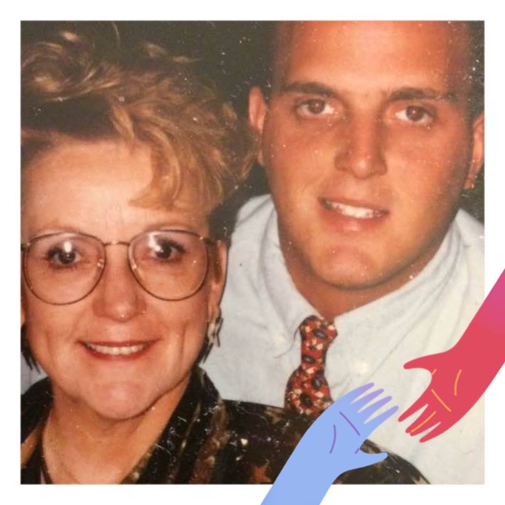

Reality Check

Charlie is the emotional anchor of Reality Check. His presence brings comfort, hope, and connection to everyone who visits.

Mama taught compassion, strength, and resilience. Her legacy lives in every act of kindness Reality Check delivers.

Chef George shaped the founder’s culinary journey and philosophy of service. His mentorship is honored here.